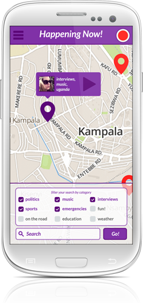

Peepol.tv offers live streaming content, within an easy-to-use community-building network, where people throughout the world contribute and curate content for all to see and share. Discover events near and far, as they happen in real time, or search through our repository of video content.
About Peepol.tv


We invite all developers interested in building open tools for broadcasting live video and/or distributed recording of such video as evidence, to join the Peepol.tv dev-community. Our goal is to develop an open-source, standards-based, streaming video platform for desktop and mobile to help people around the world to stream and view live-media content, such as political protests or public events. Collaborate with us on GitHub